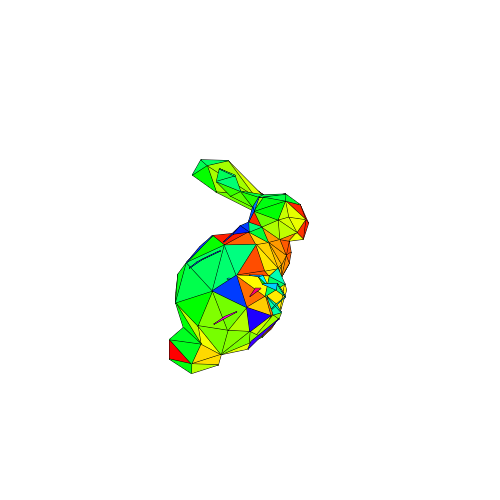

Backface Culling
Assignment Goals:
- Learn how to calculate face normals using the cross product
- Learn how backface culling is used to decide what faces to draw
- Learn about the limitations of backface culling
Instructions for you to follow in this document will be highlighted in blue.
Don't forget to cite your sources!
Filling in the Faces
Complete the following:
- Start with your code for drawing in a perspective projection (or your code from the dot/cross product assignment if that includes your perspective drawing code).
- Create an array called
face_colors = ["red","green","blue","cyan","magenta","yellow"];. You can replace the color strings with any color names or formats from the CSS color specification.
- In
draw_cube_persp, in your for loop over each face, add the following code after you have finished creating the path for the face:
ctx.fillStyle = face_colors[i];
ctx.fill();
- Run your code and rotate the cube around. It should look almost correct: each face will be drawn in with a color, but some faces will be drawn on top of other faces when they're actually behind them. There are three fixes for this:
- Painter's Algorithm: Sorting the faces from furthest to closest to the camera, and draw them in that order. For some types of geometry, it is easy to tell which triangles are closest/furthest from the camera. In other cases, two faces will intersect and one will need to be drawn partially on top of and partially underneath another and this won't work at all.
- Backface culling: Removing the faces not facing the camera. We do not want to draw faces that aren't facing the camera (backfaces) and so we cull (remove) them from the render process. This will solve our cube problem, but won't solve overlap problems.
- Z-buffers: Keeping track of how far each pixel is from the camera when we draw it. We will implement this process in a later activity.
Backface culling is incredibly fast because we already need to calculate the direction of each face for lighting and other effects, we can calculate angles quickly with linear algebra, and once we've decided to cull a face we don't need to do any more processing for that face. Most 3d graphics engines implement a combination of these techniques.
You can see backface culling in action when you fall through the map in video games. This shows up often in speedruns [warning: flickering] and you can see it for yourself in this THREE.js demo by flying beneath the terrain. The geometry between the camera and where the camera is supposed to be aren't drawn, because those walls are "facing" away from the camera, towards where the camera is expected to be.
Normal Vectors
In your draw_persp_code function in your loop over each face, we need to check if the normal vector to the face is pointing towards or away from the camera. To do this, we need two vectors: one from the camera to the face which we will call vc, and another which is normal to the face.
Complete the following:
- Locate your labeled drawing of your cube
- Create a new array
cubenorms such that:
-
cubenorms[i] = [x,y,z] is a three-element array representing a vector
- This vector has length 1, is perpendicular to the
ith face, and is facing outward from the cube.
- In your loop over each face, calculate
vn by:
- Applying your rotation matrices to the normal vectors of the face.
- Do not apply the translation to the normal vectors of the face. Translations only affect points, not directions!
-
vc should be a vector from the camera (located at the origin) to the face. It can be the location of any vertex or the center of the face, after being transformed (rotated and translated), but before being projected.
Make sure vc is the location of the vertex after being rotated and translated!
- Now, we need to calculate if these two vectors are pointing in the same direction. You can do this using dot products. THREE.js offers
v.dot(w) which returns the dot product of the vectors v and w or you can calculate the dot product using your vec_dot function.
- Use an
if statement to only draw and fill a face if vc and vn are in opposite directions.
Some resources for learning about dot products can be found in the previous assignment.
Calculating Normal Vectors
Given two 3D vectors v and w, their cross product v × w is a vector:
- with length the area of the parallelogram formed by the two vectors
- perpendicular to those two vectors
- obeying a right-hand rule for those two vectors (if you point the fingers of your right hand in the direction of v and can rotate them to point in the direction of w, your thumb is pointing in the direction of v × w)
This is really useful for:
- Calculating the area of triangles (half the area of the parallelogram)
- Reasoning about the orientation of a triangle
- Distinguishing clockwise and counter-clockwise triangles
THREE.js has a built-in cross product function. To calculate the cross product of vectors v and w, use new THREE.Vector3().crossVectors(v,w). Or use your vec_cross function from before.
Some resources for learning about cross products can be found in the previous assignment.
Complete the following:
- In your code for drawing the bunny, in your for loop over each face, assign three Vector3s to the vertices of the triangle after it's been transformed (rotated and translated, but before the projection). Call them t0, t1, and t2. Make sure they're in the right order.
- Calculate t1-t0 and t2-t0. These are the vectors representing two edges of the triangle. THREE.js has a built-in vector subtraction function. To calculate the difference of vectors v and w, use
new THREE.Vector3().subVectors(v,w).
- Calculate the cross product of these two vectors. Call it
vn.
- As before, calculate the dot product of
vn and vc to determine if you should draw the face. vc can be any point in the triangle, either one of the vertices or its center.
- You'll need to pick a color for each face, and it's better to pick a different color for each face. You can use
ctx.fillStyle = "hsla("+i+",100%,50%,1)";, where i is the index of the face. You could also populate an appropriate length face_colors array using Math.random().
- The result should look something like the below:

Note that most of the faces are drawn correctly, but a few faces are drawn on top of faces they should be behind. Why is that?
Above and Beyond
The following are optional suggestions for improving your interactive:
- You can create a neat transparency effect on the cube by first drawing the back faces, then drawing the front faces with a partially transparent color. This sort of effect is much trickier to pull off correctly for more complex geometry, since it requires keeping track of the order that triangles appear from furthest to closest to the camera for every pixel.
- When deciding what color to color each face, use the normal vector that you computed in some way. This can create an effect that is unrealistic but very good at communicating the shape of an object. You can see an example here and here.